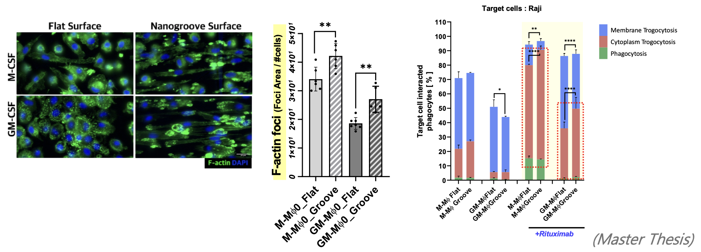
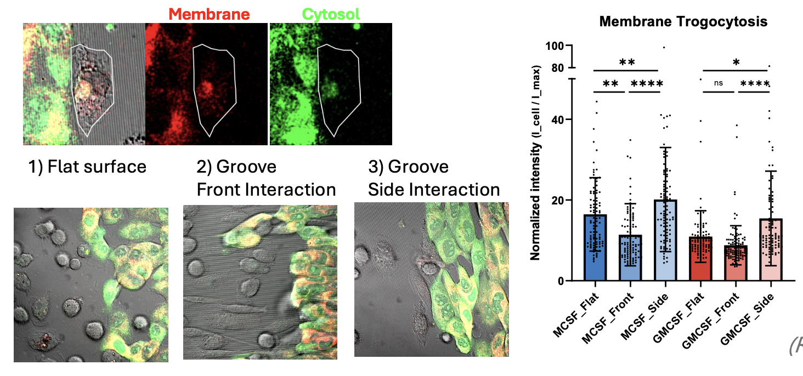
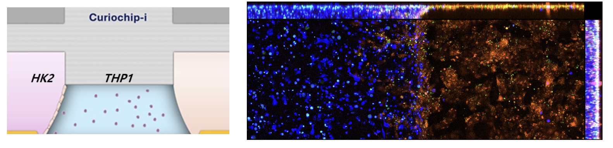

Seoul National University
M.S. in Interdisciplinary Program in Bioengineering
Seoul, South Korea
Aug. 2023 - Feb. 2026
Seoul National University
Bioengineering researcher focused on immunoengineering, biomaterials, and macrophage biology
About
I am a bioengineering researcher at Seoul National University, working at the intersection of immunology, biomaterials, and microphysiological systems. My research focuses on understanding and engineering macrophage behaviors in complex biochemical and biophysical environments, with applications in cancer immunotherapy and immune safety evaluation. I am particularly interested in biomaterial-based strategies that modulate immune cell function and reveal how physical cues shape immune cell decision-making.
Research Interests
News
Research

Master's Thesis
This project quantitatively investigates how macrophage phagocytic behaviors vary across biochemical and biophysical environments. It focuses on phenotype-dependent macrophage function, immune cell activation, and the role of engineered biomaterial platforms such as nanogroove surfaces and microwell-based cell interaction systems.
Macrophages, phagocytosis, biomaterials, immune engineering, biochemical cues, biophysical cues

Research in progress
This project studies how spatial organization and physical microenvironments regulate macrophage trogocytosis during interactions with cancer cells. It examines membrane and cytoplasmic transfer behaviors under different interaction geometries, including flat surfaces and nanogroove-guided front/side interactions.
Macrophages, trogocytosis, cancer cells, tumor immunology, biophysical regulation, cell-cell interaction

Research in progress
This project develops human cell-based 3D microphysiological systems that integrate immune cells for evaluating immunotherapy safety and immune responses. It focuses on system-level immune regulation, cytokine responses, and physiologically relevant in vitro platforms.
Microphysiological systems, immunotherapy, immune safety, 3D culture, cytokines, bioengineering
Education
M.S. in Interdisciplinary Program in Bioengineering
Seoul, South Korea
Aug. 2023 - Feb. 2026
B.S. in School of Biomedical Engineering
Seoul, South Korea
Mar. 2019 - Feb. 2023
Experience
Researcher · Advisor: Prof. Junsang Doh
Sep. 2023 - Present
Research Intern · Advisor: Prof. Jong-Bong Lee
Jan. 2023 - Feb. 2023
Research Intern · Advisors: Prof. Han-Kwang Yang, Prof. Hyuk-Joon Lee, Prof. Do Joong Park
Jul. 2022 - Aug. 2022
Research Intern · Advisor: Prof. Won Jong Kim
Jan. 2022 - Feb. 2022
Conferences
Poster Presentation · Awaji, Japan
"Quantitative analysis of the phagocytic behaviors of macrophages in various biochemical/biophysical environments"
Nov. 2025
Poster Presentation · Seoul, South Korea
"Characterization of phenotype-dependent diverse phagocytic behaviors of macrophages"
Apr. 2025
Conference Participation · Daegu, South Korea
Attended sessions on biomaterials for immunotherapy.
Jun. 2024
Patent
Co-inventor · Patent application, Korea Intellectual Property Office, pending.
2025
Honors
Seoul National University
Fall 2023
Skills
PCR, T7E1 assay, gel electrophoresis, CRISPR-Cas9 knockout/knock-in, electroporation and lipofection, Western blot, ELISA, immunofluorescence, live-cell imaging, confocal imaging, flow cytometry, microphysiological system chip handling, hydrogel loading and gel patterning, nanogroove and microwell fabrication, SEM, TEM
Python, MATLAB, R
Korean: Native
English: Proficient
Contact
For research inquiries or academic opportunities, please contact Yoojin by email or through her professional profiles.